Independent ray test misses center floor; lower handle center-to-wall distance .07429 exceeds tube radius .052.
Unexpected Cube exported. Bounds max error=1.010000; source triangles=876, imported=888. Not asset-only or equivalent geometry.
逐项评分与证据
silhouette: 5.0/10 — Tapered cup, D handle and tall spoon recognizable. Handle floats at lower attachment; photo has a continuous join. Faceted rim and cup profile remain coarse.
proportions: 7.5/10 — Cup taper roughly follows photo; spoon axis/bowl outline and handle curvature differ. Perspective was not solved, so this is qualitative, not measured reconstruction accuracy.
signature_features: 7.5/15 — Open lip, handle hole and separate spoon exist. Handle join and axial bottom fail; rolled lip and bowl concavity are not close enough for final.
materials: 2.5/5 — White ceramic colour block present; bright/noisy lighting, coarse curvature and highlight response differ from photo.
shading: 2.0/4 — No winding errors measured, but 16-sided silhouette and strong highlights expose faceting.
geometry: 8/8 — Source evaluated triangles=876, budget=25000; nonfinite=0, degenerate=0. All geometry criteria required for these 8 points.
material_portability: 4/4 — Base untextured PBR materials embedded; Khronos format validation passed. Extra Cube is penalized under export scope.
source_editability: 4/4 — Source .blend reopens with separately editable semantic parts; this does not certify a usable armature.
purpose_function: 0/15 — Independent ray test misses center floor; lower handle center-to-wall distance .07429 exceeds tube radius .052.
export_roundtrip: 0/10 — Unexpected Cube exported. Bounds max error=1.010000; source triangles=876, imported=888. Not asset-only or equivalent geometry.
reference_preparation: 1.25/5 — Public source, license and interpretation retained, but perspective camera/calibration and reference-visible viewport check missing.
blockout_gate: 5/5 — Actual coarse image inspected, failure recorded with current signature/evidence, gate rejects refinement, coarse source preserved. These process points do not pass the asset.
completion_evidence: 5/5 — Per-module unresolved differences and failed final gate retained; no modules falsely labeled matched or assets claimed final.
wheel — 44.5/100，未通过
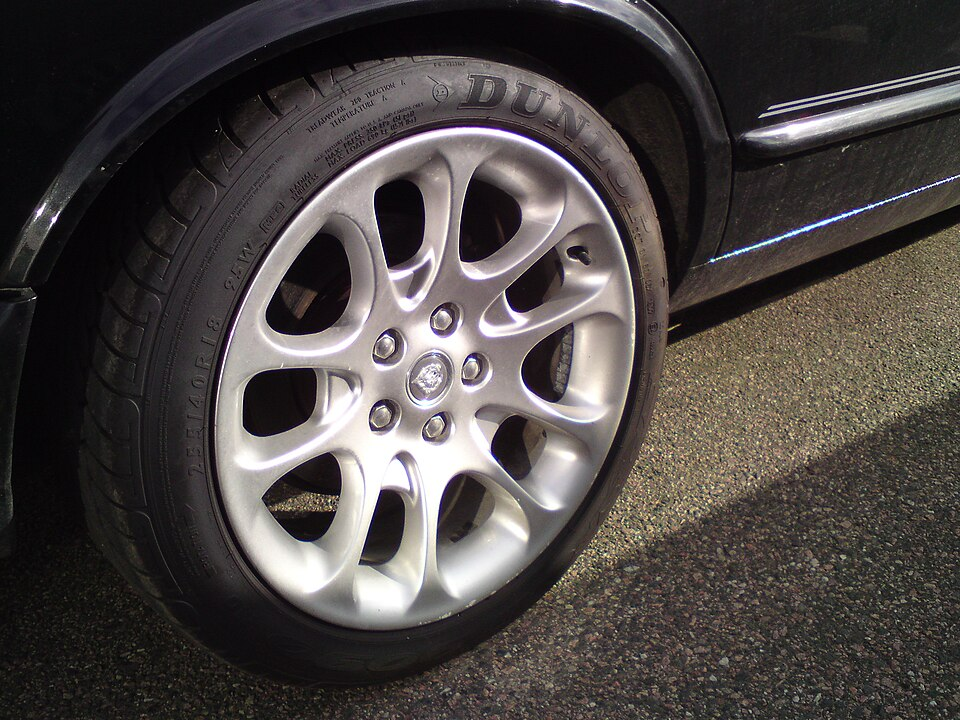
输入参考
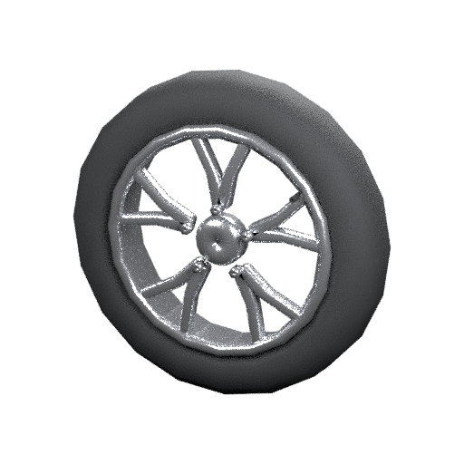
实际候选／诊断模型
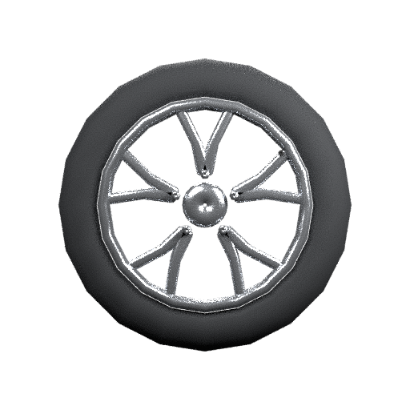
正面检查
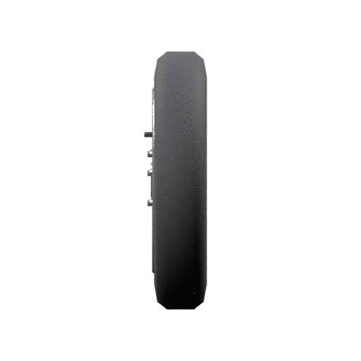
侧面检查
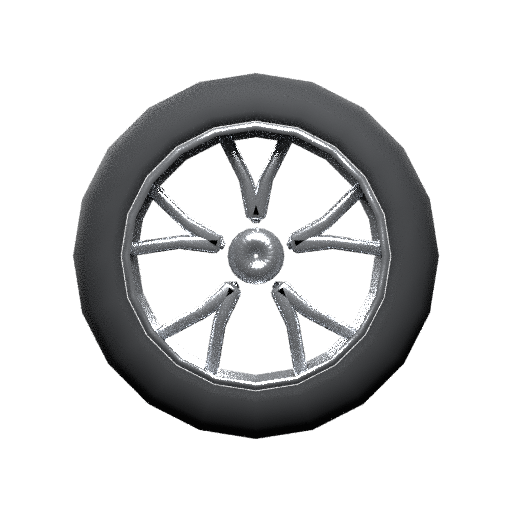
背面检查
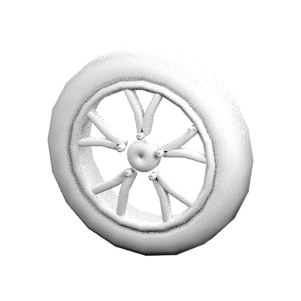
灰模检查
Coarse review failed assembly continuity; no refinement/rotation clip executed. Sampled angle remains zero. A stationary center is not evidence of successful rotation.
Unexpected Cube exported. Bounds max error=1.000000; source triangles=3296, imported=1308. Not asset-only or equivalent geometry.
逐项评分与证据
silhouette: 5.0/10 — Round tire and radial wheel identifiable, but 20-sided tire outline and no sidewall lettering/tread differ strongly.
proportions: 5.0/10 — Normalized radii follow broad tire/rim ratio; cast spoke widths/shape and recessed hub do not match. Depth inferred, camera not solved.
signature_features: 3.75/15 — Ten branches and five lugs exist, but spoke roots are disconnected, hub detail/logo missing, tire tread/lettering absent, and cast opening profiles wrong.
shading: 1.0/4 — Strong faceting and rounded rod-like branches do not reproduce the broad smoothly cast spokes.
geometry: 8/8 — Source evaluated triangles=3296, budget=40000; nonfinite=0, degenerate=0. All geometry criteria required for these 8 points.
material_portability: 4/4 — Base untextured PBR materials embedded; Khronos format validation passed. Extra Cube is penalized under export scope.
source_editability: 4/4 — Source .blend reopens with separately editable semantic parts; this does not certify a usable armature.
purpose_function: 0/15 — Coarse review failed assembly continuity; no refinement/rotation clip executed. Sampled angle remains zero. A stationary center is not evidence of successful rotation.
export_roundtrip: 0/10 — Unexpected Cube exported. Bounds max error=1.000000; source triangles=3296, imported=1308. Not asset-only or equivalent geometry.
reference_preparation: 1.25/5 — Public source, license and interpretation retained, but perspective camera/calibration and reference-visible viewport check missing.
blockout_gate: 5/5 — Actual coarse image inspected, failure recorded with current signature/evidence, gate rejects refinement, coarse source preserved. These process points do not pass the asset.
completion_evidence: 5/5 — Per-module unresolved differences and failed final gate retained; no modules falsely labeled matched or assets claimed final.
character — 41.5/100，未通过
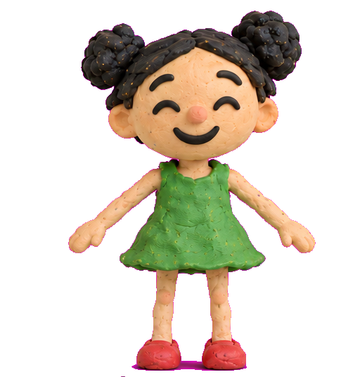
输入参考
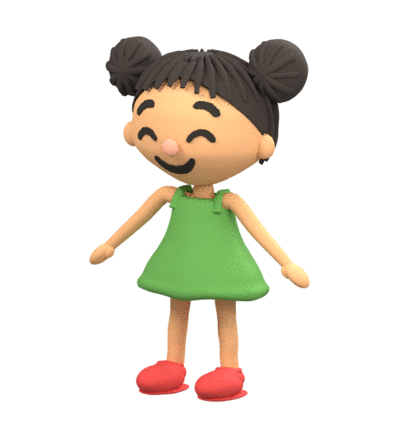
实际候选／诊断模型
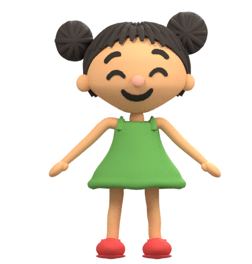
正面检查
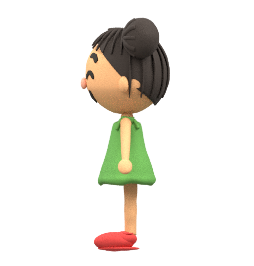
侧面检查
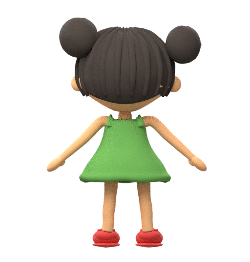
背面检查
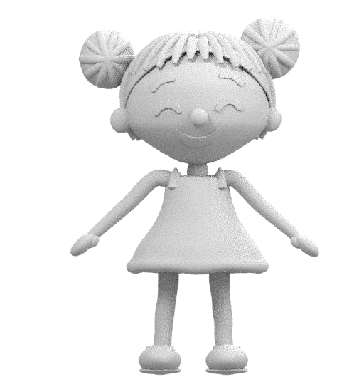
灰模检查
No persistent armature, skin or exported clip; four disposable skinning probes are not production binding.
Unexpected Cube exported. Bounds max error=1.001498; source triangles=152996, imported=143858. Not asset-only or equivalent geometry.
逐项评分与证据
silhouette: 7.5/10 — Girl, two buns, dress, separated limbs and shoes recognizable. Head contour, hands, feet and dress hem differ; back/depth only partly observed.
proportions: 7.5/10 — Front head/body placement reasonably close. Head/skull profile, facial placement, hand/thumb shape and shoe thickness have visible discrepancies.
signature_features: 7.5/15 — Happy face and two buns present. Braided irregular hair, ceramic/clay relief, dress texture/hem and explicit hand/thumb details remain substantially simplified.
materials: 2.5/5 — Broad skin/green/red/dark colour blocks match; surface relief and hand-made material response missing or weak.
shading: 3.0/4 — Closed finite meshes and consistent winding measured; close-up form is smooth but noisy and reference-specific surface relief is absent.
geometry: 0/8 — Source evaluated triangles=152996, budget=80000; nonfinite=0, degenerate=0. All geometry criteria required for these 8 points.
material_portability: 2.0/4 — Base PBR materials embedded and Khronos format passed; procedural surface detail not baked/preserved.
source_editability: 4/4 — Source .blend reopens with separately editable semantic parts; this does not certify a usable armature.
purpose_function: 0/15 — No persistent armature, skin or exported clip; four disposable skinning probes are not production binding.
export_roundtrip: 0/10 — Unexpected Cube exported. Bounds max error=1.001498; source triangles=152996, imported=143858. Not asset-only or equivalent geometry.
reference_preparation: 2.5/5 — Existing fitter uses pixel/profile config and packed guides; side reference inconsistent. Actual reference-visible viewport calibration not performed.
blockout_gate: 0/5 — Existing fitter creates detailed geometry directly; no prior signed coarse inspection in this run.
completion_evidence: 5/5 — Per-module unresolved differences and failed final gate retained; no modules falsely labeled matched or assets claimed final.